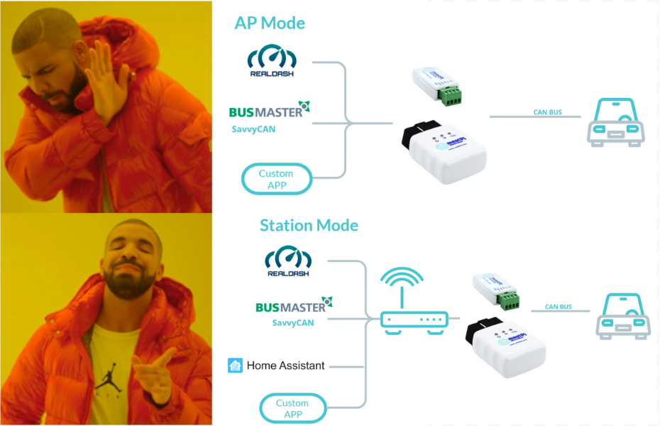
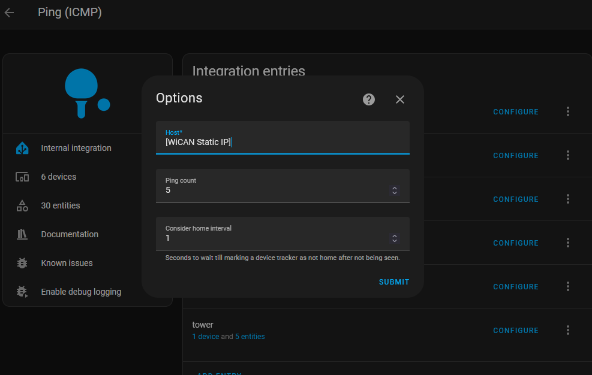
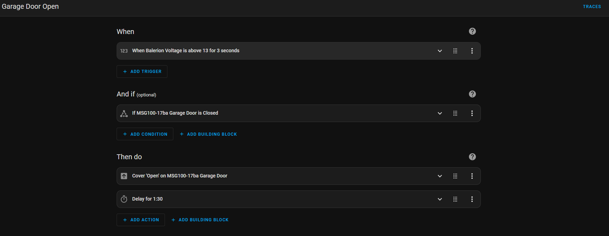
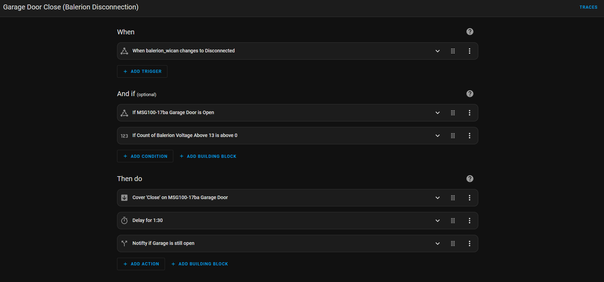
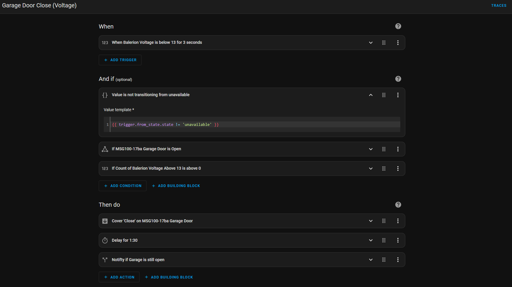

Make Your Actually™ Garage Smart

Tired of clicking the garage remote every single time you enter or leave the house in your
car? Haven't got the latest EV that directly integrates
with Home Assistant? Invested in a Google/Alexa/Siri controlled garage and now annoyed that you have
to ask it to open and close the garage door every time?
I was recently lucky enough to be an owner of a place with a garage (yeay🎉), a first for me but I
quickly got tired of fidgeting around for the garage fob remote in the car,
and even when I bought myself a Meross/Refoss Smart Garage Controller to be able to open the garage
door from my phone or voice, I found myself wondering, why can't it just work.
Specifically, I want my garage door to open when I get in and start my car, close after I have left and when I arrive back home, I want it to both open so I can park my car inside, and when I have exited my car, close up behind me.
Prerequisites
Before you start you will need to have setup a few things:
Your garage must be in range of WiFi.
This guide assumes you already have Home Assistant set up on your local network because Home Assistant automations will be controlling the garage door opening and closing. If you havent used it, I cannot recommend a home automation platform (and much much more!) more than Home Assistant. Check it out at https://www.home-assistant.io/.
You'll need a Home Assistant compatible smart garage controller that works with your garage door opener. In my case that was a Refoss Smart Garage Door Opener for my Chamberlain Liftmaster Garage Door Motor, a WiFi based smart switch. You can check Refoss's products at their main store or on Amazon. You can choose either the standard RSG100 for ~$35 CAD or Apple HomeKit enabled RSG100HK for ~$50 CAD. I choose the latter because I wanted to be able to control the garage door locally via HomeKit Integration and because the alternative will depend on the Meross Cloud Platform to function. You can also choose to use a completely different controller as long as its able to control the garage door and be able to tell if the door is open or closed.
Lastly, you'll need the a WiCAN device made by MeatPi Electronics. WiCAN is an OBD-II WiFi and Bluetooth enabled ESP32 adapter which can both create a WiFi access point or connect to an existing WiFi network which will come in very handy. Check out its details here. By virtue of connecting via the OBD-II port, it be plugged in to virtually any car after 1996 and being able to connect to your home's local network allows it to provide Home Assistant with all the information it needs about you vehicle to determine if it should open or close the garage door. This does not even scratch the surface of all the cool stuff the WiCAN can do including providing fuel info and odometer readings and more. Check out their GitHub Repo.
meatpiHQ/wican-fw ⭐WiCAN Setup
Lets start by setting up our WiCAN device. First, find your car's OBD-II port and plug the device in. It varies in each car but for mine, it was underneath the steering column on the left side. Once plugged in, it should automatically be in Access Point (AP) mode with an SSID like WiCAN_xxxxxxxxxxxx and a default password like @meatpi#. Once connected to the AP, hop on over to http://192.168.80.1/ on your favorite browser and access the device dashboard. Use the official guide if you are stuck on the previous step.
Switch over to the Settings tab and under AP Config and switch the mode from AP to AP+Station. Add your WiFi settings under the Station Config section and feel free to set a complex password for your AP. We wont be needing to connect to it. Save changes and and let the device reset and connect to your WiFi network. At this point, I highly recommend you give the WiCAN a static IP through your router because that will be required in the next part of the setup. If you do not know how to do this, do include your router make or brand in the search so you can find the guide relevant to your device.
In this configuration, the WiCAN device will always be on and actively drawing a power from your car battery. Its a small device so the power drain is small but not negligible. In my use of the device, even up to a week's gap of not using the car did not impact my battery in any noticeable way. Your mileage may vary but you should probably start and run your car at least once a week in order not drain your battery.
Back on the Status tab, you may have noticed WiCAN giving a reading of the car battery voltage. This is the magic sauce that will let us know when the car is on or off. When off, the voltage will hover around 12.0 - 12.8V but when the car is on and alternator running, the voltage will be 13V or more. Combined with an endpoint at http://[wican-ip]/check_status which we will configure a bit later in the guide, Home Assistant should have a pretty good idea when the car is on and off.

Home Assistant Setup
First, we need configure Home Assistant to be able to tell whether the WiCAN device is on connected to our WiFi network or not. We can do this using the Ping (ICMP) platform. Head over to integrations, click on Add Integration, select Ping (ICMP). Put the static IP for the WiCAN device and enter submit. You should now have an entry for the Ping (ICMP) on the Integration page with the device we just added. Navigate to it and under Integration Entities, click Configure. Set the Consider Home Interval to 1 because we want Home Assistant to mark this device as not home just 1 second after it disconnects. You can even give your device a name to recognize it more easily. I've named my car Balerion :).
Next, lets configure a REST sensor that will poll the voltage from the WiCAN. Add the following to your configuration.yaml making sure to substitute the WiCAN-Static-IP, Sensor Name and Unique Id placeholders. The value template will ensure that the "V" unit in the json response is removed so Home Assistant can parse the actual value.
sensor:
- platform: rest
resource: http://[WiCAN-Static-IP]/check_status
verify_ssl: false
timeout: 3
scan_interval: 1
name: [Sensor Name]
unique_id: [Unique Sensor ID]
value_template: >
{{ value_json.batt_voltage | regex_replace(find='[^\d.]', replace='') | float }}
state_class: measurement
device_class: voltage
unit_of_measurement: "V"
Garage Door Open Automation
At this point we have all that we need to open the the Garage Door, both when you start the car inside your garage and when you return home in your car. We will observe the car battery voltage every 1 second as set by the scan_interval and if the voltage is above a set threshold say 13 volts for a set number of readings say 3 consecutive readings and if the door is currently closed, then open the garage door. We do not however want to use the WiCAN connecting as a trigger due to the security risk it poses. Otherwise, if for whatever reason it disconnects from the router and reconnects again, the garage door will open which would be very dangerous. We will discuss fine tuning the previously mentioned parameters at the end of this guide. When creating this automation, we also want to make sure it runs in single mode and add a timer delay at the end so the automation can be run at most one time in the time delay that is added. Ultimately it will looks similar to the screenshot below.
Garage Door Close Automation Setup
To create automations to close the garage door, the next logical step would be to flip the previous automations trigger and initiate when the voltage is below our set threshold for a set number of readings. While this would certainly work, it overlooks a few additional scenarios in which you would not want your garage door closing on you. Imagine if you were to open the garage door manually to take the garbage out. Because Home Assistant is constantly polling for car battery voltage and the value is currently below the threshold due to car being "Off", the conditions to trigger the automation are met and the garage door will close. Similarly, if your garage door is open and the WiCAN disconnects, the garage door will be triggered to close which is undesirable behavior at best and down right dangerous at worst, especially if you do not have a safety sensor in your garage door motor system. In other words, we need to be able to tell if the car was in the ON state at some point within a specific period of time. Luckily being the awesome platform that Home Assistant is, we can use the history_stats platform to achieve exactly that. Copy the following configuration as an additional sensor in your configuration.yaml and replace the value if the Unique Id placeholder with the same value you used for your voltage sensor. I've set the timedelta to 1 minute.
sensor:
- platform: history_stats
name: "Count of Voltage Above 13"
entity_id: [Unique ID]
state:
- "13.1"
- "13.2"
- "13.3"
- "13.4"
- "13.5"
- "13.6"
- "13.7"
- "13.8"
- "13.9"
- "14.0"
- "14.1"
- "14.2"
- "14.3"
type: count
start: "{{ now() - timedelta(minutes=1) }}"
end: "{{ now() }}"
Garage Door Close Automation: Close on Disconnection
With this in place, we can now proceed with creating our automations. We have two distinct scenarios and triggers we have to program so lets start with needing the garage door to close when leaving home. The trigger is a simple one: WiCAN device disconnecting from our local WiFi network. We just have to make sure that the car was in an ON state at some point in the timedelta period. I also added a conditional notifications to execute as the last step of the automation which fires off in case the delay period has passed and the door is still not in a closed state. Ensure your automation runs in single mode.
Garage Door Close Automation: Close on Car in Off State
The second automation to close the garage door is for the scenario where you arrived back home, parked your car in the garage and have now switched it off. The trigger for this the voltage being below the threshold and we additionally check to make sure once again that the car was in an ON state at some point in the timedelta period. As an additional safety condition, we ensure that the trigger from_state was not unavailable which happens if the WiCAN for some reason gets disconnected. Once again, make sure to set your automation running mode to single.
Testing and Tweaking Parameters
And that's it! With one more Home Assistant restart or configuration update, you should be good to test the system out! If debugging is required, don't forget to use the TRACES. This system uses a number of parameters for which I chose values that work for me and they might be different for you. Lets discuss some of them.
Voltage threshold = [13V]
This is the lowest voltage that the WiCAN device can report including and above which, the car is considered to be in the ON state. You may want to adjust this value based on your vehicle and battery. Setting it lower increases the probability of a false positives for the car to be considered ON. Keeping it too high means the garage door will take more time to open because it takes a few extra seconds for the alternator to increase the voltage to the threshold value.
Scan Interval = [1 second]
This is the rate of polling Home Assistant will use to check on voltage values from the WiCAN device. 1 second is the lowest that a REST sensor can be set and it since the WiCAN device consumes negligible additional energy to respond to the query than it would anyway, I kept this at the minimum.
Number of Readings = [3 seconds / 3 readings]
This value represents the number of consecutive readings above or below the threshold voltage to trigger the automations. I chose 3 readings (1 per second) as a middle ground between making the system too sensitive or take excessively long to trigger.
Time Delta = [1 minute]
This value in minutes is how far back from now Home Assistant should check to see if the car battery voltage reported by the WiCAN device was above threshold and therefore in ON state. This value is needed to ensure that Home Assistant only closes the garage door after the car has recently been on. Increasing it further would make automations more permissive and trigger the garage door closing at unexpected time after the car has stopped. Reducing it may risk the garage door from not closing if readings in the time delta were anomalously low. Ensure this value is less than automation delay to ensure that each automation run searches a unique window of voltage readings.
Delay = [1 minute 30 seconds]
This value is the delay added to each automation in combination with the automation mode set to single to ensure that it can only run once every delay period. Setting this value too low may risk automations for being able to trigger too often causing unexpected behavior. Setting a value too high would mean that in cases you do want it to trigger such as returning home because you forgot something will require extra wait time. Ensure this value is greater than time delta so that each run of the automation checks for non-overlapping time windows for last time the car was in an ON state.
Actually™
I have tested this system over 3 months and have found it reliable enough to share in this guide. However there have been four instances of arriving home waiting outside the garage where I observed the battery voltage reading has been below threshold even when the car is running. I am not quite sure why the car battery behaved that way but it is rare enough that I can always use the alternative of using my phone to do so in those rare cases. So 95% of the time, it works every time.
I hope you enjoyed reading this guide and were able to make your own garage Actually™ smart. As I mentioned previously, this just scratches the surface of what the WiCAN can do. In a future guide, I will demonstrate how you can track your car's odometer and fuel level. If you enjoyed reading this guide or have an improvement to suggest, drop me a message on LinkedIn or Github! Good luck on the path!
arcaneiceman